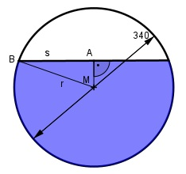

Aufgabe 235 In welcher Höhe h steht das Wasser in der Tonne, wenn sie zu 2/3gefüllt ist, und wie lang ist die Sehne s?

Wasserstand h = 2/3 des Durchmessers h = 2/3 * 340 mm = 226,7 mm Satz von Pythagoras im Dreieck BMA: s r2 = MA2 + (---)2 |MA2 2 MA = h – r = 226,7 mm – 170 mm = 56,7 mm s r2 - MA2 = (---)2 2 s2 1702 mm2 - 56,72 mm2 = ---- |*4 4 s2 = 102 740,4 mm2 |√ s = 320,5 mm